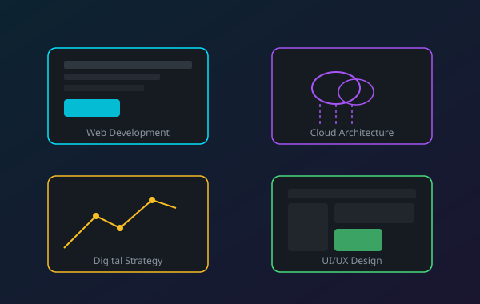

What We Build
For You
From initial concept to production deployment, our full-service capability covers every layer of the modern technology stack.

Web Development
High-performance web applications crafted with semantic HTML5, modern CSS, and clean JavaScript — no bloat, no shortcuts.
We build everything from marketing sites to complex data-intensive web apps. Every project gets rigorous performance testing, WCAG 2.1 accessibility auditing, and cross-browser QA before it leaves our hands.
- Semantic, accessible HTML5 markup
- CSS3 with Flexbox & Grid layouts
- Progressive Web App (PWA) capability
- Core Web Vitals optimisation
- Headless CMS integration
Cloud Architecture
Resilient, secure, and cost-optimised cloud infrastructure tailored to your workload — not a generic template.
We work across AWS, Azure, and GCP to design infrastructure that matches your actual usage patterns. Whether you need serverless functions, containerised microservices, or a hybrid multi-cloud strategy, we architect for uptime and efficiency.
- Multi-cloud and hybrid strategies
- Serverless & container (Docker/K8s)
- Infrastructure as Code (Terraform)
- DevOps pipelines & CI/CD
- Security audits & compliance
Digital Strategy
Technology investment guided by business outcomes — not technology for its own sake.
Our strategists work at the intersection of technology, people, and process. We audit your existing stack, map it to your business objectives, and produce a clear, costed roadmap with measurable milestones.
- Technology audits & maturity assessments
- Vendor evaluation & selection
- Digital roadmap development
- Change management consulting
- OKR and KPI framework design
UI/UX Design
Design systems and interfaces built for real humans — with accessibility, usability, and brand cohesion at their core.
We conduct user research, create information architectures, and build component-based design systems that scale across products. Every design decision is backed by data and validated with real users before development begins.
- User research & journey mapping
- Wireframing & interactive prototypes
- Design system creation
- WCAG 2.1 AA accessibility compliance
- Usability testing & iteration
Common Questions
Most web projects run between 6 and 16 weeks depending on scope. A focused marketing site can launch in under 6 weeks; complex web applications typically take 12–20 weeks with multiple sprint cycles. We provide a detailed timeline during discovery.
Both. We work with early-stage startups who need their first product as well as enterprise teams running complex digital transformation programmes. Our engagement models are flexible to match your stage and budget.
We offer tiered retainer packages covering monitoring, bug fixes, performance tuning, and feature development. Most clients opt for a 3-month stabilisation retainer after launch, then move to a lighter ongoing support model.
Absolutely. We assess your existing stack during discovery and work within it where sensible. If we recommend changes, we explain the rationale clearly and present the trade-offs — the final decision is always yours.
Accessibility is built into our process from the start, not bolted on at the end. We follow WCAG 2.1 AA guidelines, run automated audits with axe-core, conduct screen-reader testing, and include keyboard navigation testing as part of every QA cycle.